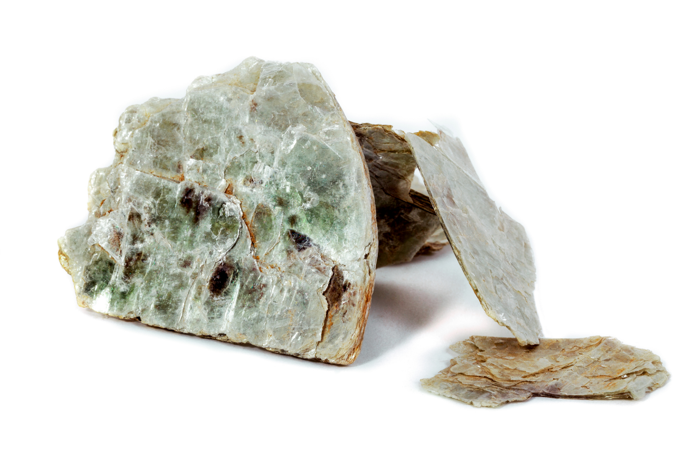
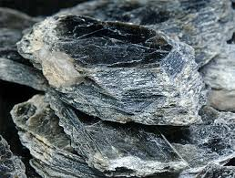
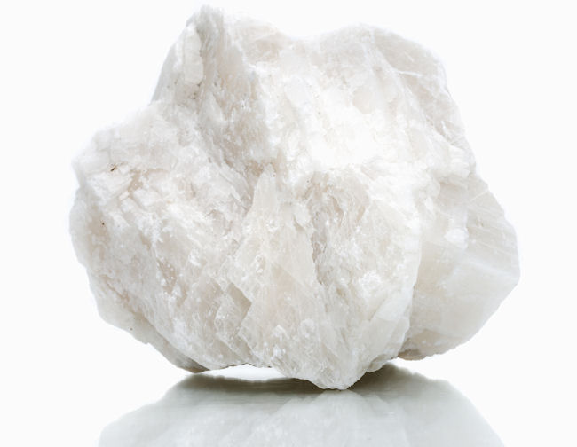
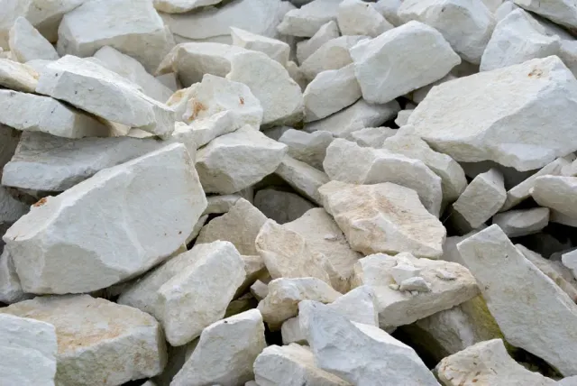
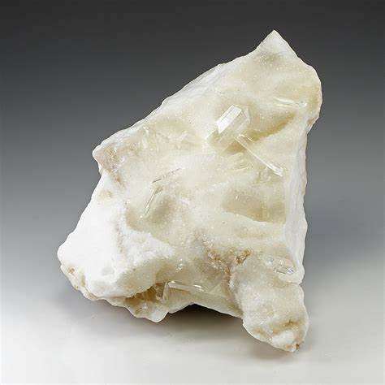
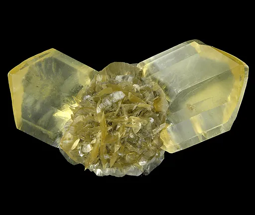
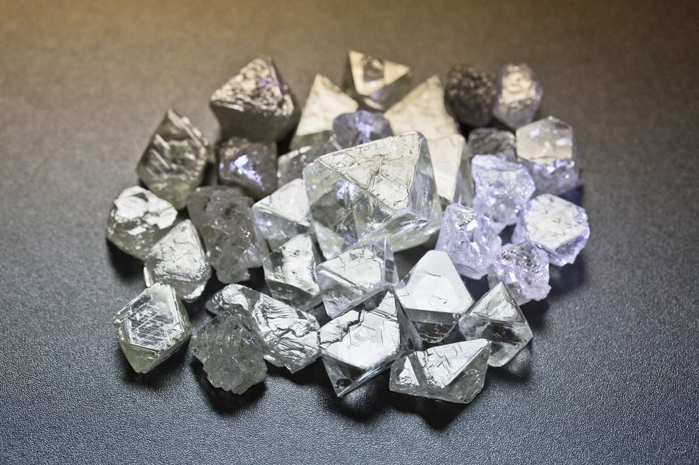
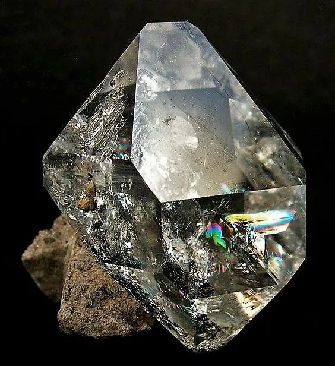

21 Mineral Resources In India Non Metallic
1. Mica


Type of Mineral: Non-Metallic Primary Use: Widely used in electrical and electronics industries due to its excellent insulating properties and resistance to high temperatures. Also used in paints, cosmetics, and construction materials.
Major States:
Jharkhand: extensive deposits in the Koderma district. Andhra Pradesh: The largest producer, Known for high-quality mica, especially from Gudur mines. Rajasthan: Contributes significantly with reserves in the Bhilwara and Ajmer districts. Bihar and Odisha: Additional smaller reserves adding to national production. Main Mines or Locations:
Koderma Mines (Jharkhand): Known as the "Mica Capital of India," Koderma district is famous for high-quality mica. Gudur Mines (Andhra Pradesh): A significant site for muscovite mica, essential for the electrical industry. Ajmer and Bhilwara (Rajasthan): Important sources for mica extraction, supplying to various industrial sectors.
Physical Characteristics:
Muscovite Mica: Most commonly found and valued for its high insulating properties; transparent to translucent with a vitreous luster. Phlogopite Mica: Known for its heat resistance, used in high-temperature industrial applications.
Economic Importance:
Mica mining contributes to the economy by supporting the electrical, electronics, and construction industries. India's high-quality mica reserves make it one of the leading exporters, helping meet the global demand.
The mineral supports local employment, especially in regions like Jharkhand and Andhra Pradesh, where mica mining forms a substantial part of the regional economy.
2. Limestone


Type of Mineral: Non-Metallic Primary Use: Essential in cement manufacturing, limestone is also used in steel production, agriculture (soil conditioning), chemical industries, and as a building stone.
Major States:
Rajasthan: Leading producer with extensive reserves in areas like Jaisalmer and Udaipur. Madhya Pradesh: Notable for limestone deposits in districts like Satna and Katni, contributing significantly to cement production. Andhra Pradesh: Important reserves in Kadapa and Kurnool districts. Gujarat: Known for limestone deposits in districts like Amreli and Porbandar, supporting regional cement plants. Chhattisgarh: Rich in deposits, particularly in the Raipur and Bilaspur districts, serving cement and steel industries.
Main Mines or Locations:
Jaisalmer and Nagaur (Rajasthan): Major sources for limestone, crucial for cement manufacturing. Satna and Katni (Madhya Pradesh): High-quality limestone, essential for cement and steel industries. Cuddapah (Andhra Pradesh): Known for extensive deposits supporting the local cement industry.
Physical Characteristics:
Composition: Primarily composed of calcium carbonate (Ca CO₃), giving it a white to gray color. Texture: Usually fine-grained but can vary, depending on geological formation; often used in polished or crushed forms.
Economic Importance: Limestone mining is vital for India’s construction and infrastructure sectors. It supports the cement industry, which is foundational to building and development projects across the country. Limestone is also exported, adding value to the economy and providing local employment, particularly in states like Rajasthan, Madhya Pradesh, and Andhra Pradesh, where limestone mining is a key industry.
3. Gypsum


Type of Mineral: Non-Metallic Primary Use: Primarily used in the construction industry for manufacturing cement and plaster. Gypsum is also essential in agriculture as a soil amendment and conditioner.
Major States:
Rajasthan: The largest producer, with major deposits in Jodhpur, Bikaner, and Jaisalmer districts. Tamil Nadu: Known for significant deposits that support regional industries. Gujarat: Produces gypsum, primarily utilized by local cement plants. Jammu & Kashmir: Emerging as a contributor with reserves supporting local usage. Himachal Pradesh: Limited deposits but plays a role in regional cement production. Main Mines or Locations:
Jodhpur, Bikaner, and Jaisalmer (Rajasthan): Key sources, supplying high-quality gypsum for construction and agricultural applications. Cuddalore (Tamil Nadu): Important area for gypsum production, serving local industries.
Physical Characteristics:
Composition: Primarily composed of calcium sulfate dihydrate (Ca SO₄·2H₂O), contributing to its white to transparent color. Texture: Soft, easily ground into powder, making it ideal for plaster and wallboard applications.
Economic Importance: Gypsum mining is significant for India’s construction industry, providing essential materials for plaster, wallboard, and cement production. Gypsum’s role in agriculture is equally important, as it improves soil quality, particularly in regions prone to alkalinity and salinity issues. The mineral is a key economic resource in Rajasthan, supporting both local industries and export markets.
4. Diamond


Type of Mineral: Non-Metallic Primary Use: Primarily valued as a gemstone in jewelry, diamonds also play an essential role in various industrial applications due to their exceptional hardness, being used for cutting, grinding, and drilling purposes.
Major States:
Madhya Pradesh: The only diamond-producing state in India, especially notable for the Panna diamond mines. Chhattisgarh: Known for prospective diamond-bearing regions, though production is limited. Andhra Pradesh: Has areas under exploration with potential diamond deposits. Main Mines or Locations:
Panna Mines (Madhya Pradesh): The only operational diamond mine in India, producing gem-quality diamonds, managed by the National Mineral Development Corporation (NMDC).
Physical Characteristics:
Composition: Composed entirely of carbon atoms arranged in a crystal lattice, providing extreme hardness and optical brilliance. Hardness: Rated 10 on the Mohs hardness scale, making it the hardest known natural material.
Economic Importance: Diamonds contribute significantly to India’s jewelry industry, both domestically and in exports. The industrial-grade diamonds produced support various sectors requiring high-precision cutting tools. The Panna mines also bring revenue to the region and support the local economy, making diamond production economically valuable for India.